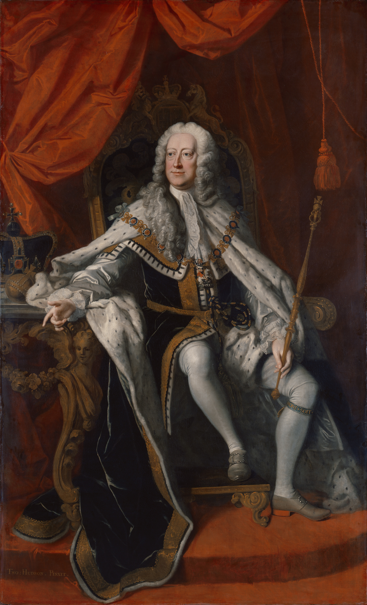

History
The Battle of Culloden was the final battle of the Jacobite uprising of 1745. The Jacobites were lead by Charles Edward Stuart (also known as Bonny Prince Charlie) and aimed to overthrow the current British goverment, restoring House Stuart as the ruling monarchy. The Jacobites would suffer a devastating loss at the hands of the British goverment and would ultimately spell the end of the rebellion.

The Jacobites main objective was to restore the House Stuart to power and to overthrow the current Hanover monarchy. Lead by Charles Edward Stuart, with backing from the French, the Jacobites would enter the Battle of Culloden with a force of 5000 - 6000 men. They would suffer defeat with 1500 - 2000 men being killed or wounded in battle. This battle would be their last defeat and the Jacobite rising was no more.
The British forces, under the monarchy of George II, would have a strength of 6900 - 7200 men and were commanded by the Duke of Cumberland, Prince William Augustus. The Duke would lead his battalion to a crushing victory, only suffering losses of 50 men killed and 259 wounded.